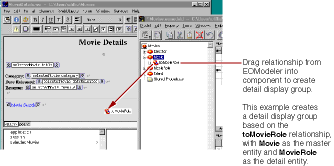

PATH
Documentation > WebObjects 4.5 >
Tools and Techniques
Creating a Detail Display Group
While a display group manages objects associated with a single entity, you can access other kinds of objects through an entity's relationships. In a master-detail
configuration, a master display group holds enterprise objects for the source of a relationship, while a detail display group holds records for the destination. As individual records are selected in the master display group, the detail display group gets a new set of enterprise objects to correspond to the selection in the master.
To create a detail display group, you can use the Display Group Options panel:
-
Check "Has detail data source."
The Master Entity pop-up list is enabled. It lists all entities in the models in your project.
-
Select the Master Entity from the pop-up list.
The Detail Key pop-up list now contains the keys representing the master entity's relationships.
-
Select the Detail Key from the pop-up list.
You can also create a detail display group by dragging a to-many relationship from EOModeler into your component.

As with other display groups, you can use the Display Group Options panel to immediately configure the newly created display group.
© 1999 Apple Computer, Inc. – (Last Updated July 27 99)